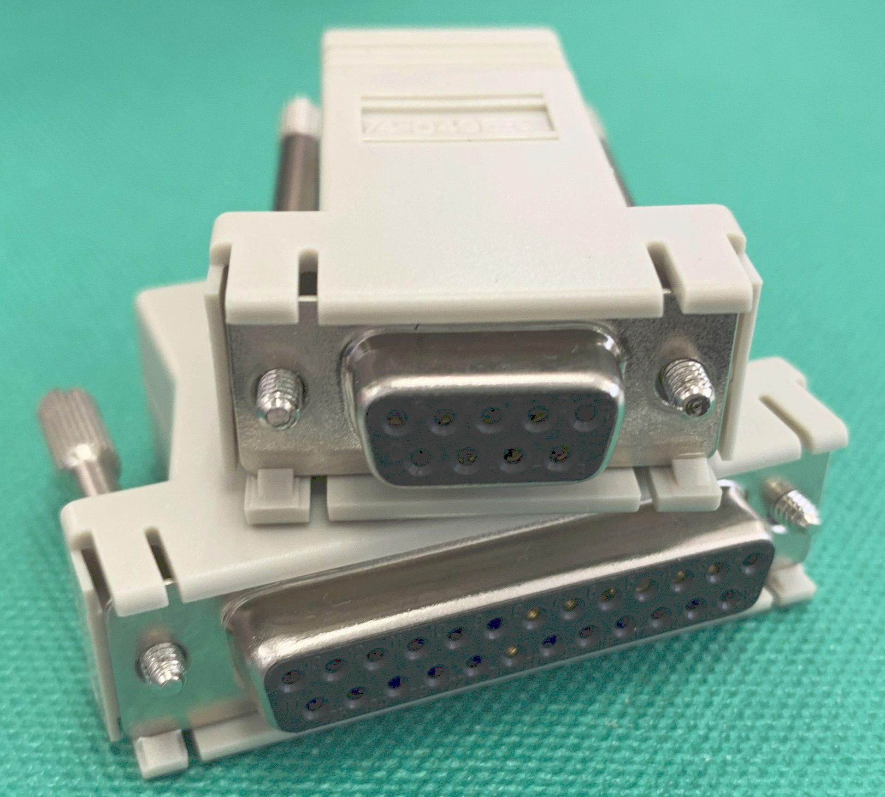

とみたまさひろ
新しい技術にはついていけないので
古いけど今でも役に立ちそうな立たなそうな
技術について語るコーナー
Q. Ctrl-C を押すとプログラムが止まるのは何故？
A. SIGINT シグナルがプログラムに送られるから
Q. シグナルを発行してるのは誰？
A. カーネル(端末ドライバ)
これらは「端末エミュレータ」
「物理的な端末」のエミュレータ
昔はシリアルポートに端末をつないでいた

https://ja.wikipedia.org/wiki/RS-232
RS-232C
端末で「A」キーを押すと
0x41 データがホストに送信される
ホストが 0x41 データを送信すると
端末に「A」が表示される
| 0 | 1 | 2 | 3 | 4 | 5 | 6 | 7 | |
|---|---|---|---|---|---|---|---|---|
| 0 | NUL | DLE | SP | 0 | @ | P | ` | p |
| 1 | SOH | DC1 | ! | 1 | A | Q | a | q |
| 2 | STX | DC2 | ” | 2 | B | R | b | r |
| 3 | ETX | DC3 | # | 3 | C | S | c | s |
| 4 | EOT | DC4 | $ | 4 | D | T | d | t |
| 5 | ENQ | NAK | % | 5 | E | U | e | u |
| 6 | ACK | SYN | & | 6 | F | V | f | v |
| 7 | BEL | ETB | ’ | 7 | G | W | g | w |
| 8 | BS | CAN | ( | 8 | H | X | h | x |
| 9 | HT | EM | ) | 9 | I | Y | i | y |
| A | LF | SUB | * | : | J | Z | j | z |
| B | VT | ESC | + | ; | K | [ | k | { |
| C | FF | FS | , | < | L | \ | l | | |
| D | CR | GS | - | = | M | ] | m | } |
| E | SO | RS | . | > | N | ^ | n | ~ |
| F | SI | US | / | ? | O | _ | o | DEL |
豆: SHIFT + 31-3B → 21-2B / SHIFT + 2C-2F → 3C-3F / SHIFT + 40-5E → 60-7E / CTRL + 40-5F → 00-1F
(日本語キーボードの場合)
矢印キーとかファンクションキーの入力は？
画面上の任意の位置にカーソルを移動するには？
色を変えるには？
ESC + いくつかの文字の組み合わせで一つの機能を表現
xterm の場合:
右矢印キー(kcuf1) : ESC O C
カーソル位置移動(cup) : ESC [ row ; col H
文字色変更(setaf) : ESC [ 3 color m
エスケープシーケンスは端末によって異なる
端末ごとのエスケープシーケンスを定義
infocmp コマンドで現在の端末の情報を出力
% infocmp
# Reconstructed via infocmp from file: /lib/terminfo/x/xterm-256color
xterm-256color|xterm with 256 colors,
am, bce, ccc, km, mc5i, mir, msgr, npc, xenl,
colors#0x100, cols#80, it#8, lines#24, pairs#0x10000,
acsc=``aaffggiijjkkllmmnnooppqqrrssttuuvvwwxxyyzz{{||}}~~,
bel=^G, blink=\E[5m, bold=\E[1m, cbt=\E[Z, civis=\E[?25l,
clear=\E[H\E[2J, cnorm=\E[?12l\E[?25h, cr=\r,
csr=\E[%i%p1%d;%p2%dr, cub=\E[%p1%dD, cub1=^H,
cud=\E[%p1%dB, cud1=\n, cuf=\E[%p1%dC, cuf1=\E[C,
cup=\E[%i%p1%d;%p2%dH, cuu=\E[%p1%dA, cuu1=\E[A,
cvvis=\E[?12;25h, dch=\E[%p1%dP, dch1=\E[P, dim=\E[2m,
dl=\E[%p1%dM, dl1=\E[M, ech=\E[%p1%dX, ed=\E[J, el=\E[K,
el1=\E[1K, flash=\E[?5h$<100/>\E[?5l, home=\E[H,
hpa=\E[%i%p1%dG, ht=^I, hts=\EH, ich=\E[%p1%d@,
il=\E[%p1%dL, il1=\E[L, ind=\n, indn=\E[%p1%dS,
...
現在の端末=TERM環境変数の値
端末の機能を使いたいプログラムはTERMの値から現在の端末名を得てterminfoデータベースを参照
使ってる端末とTERM変数の値を合わせておかないと動きがおかしくなる
tput コマンドでエスケープシーケンスを出力できる
% tput setaf 1 | od -tx1c
0000000 1b 5b 33 31 6d
033 [ 3 1 m
0000005
シェルスクリプトでエスケープシーケンスを出力したいときとかに便利
% cat
abcdefg⏎ ← 入力
abcdefg
Ctrl-C でプログラムが終了する (SIGINT)
Ctrl-\ でコアダンプして終了する (SIGQUIT)
Ctrl-S で出力停止
Ctrl-Q で再開
% stty -a
speed 38400 baud; rows 24; columns 80; line = 0;
intr = ^C; quit = ^\; erase = ^?; kill = ^U; eof = ^D; eol = <undef>;
eol2 = <undef>; swtch = <undef>; start = ^Q; stop = ^S; susp = ^Z; rprnt = ^R;
werase = ^W; lnext = ^V; discard = ^O; min = 1; time = 0;
-parenb -parodd -cmspar cs8 -hupcl -cstopb cread -clocal -crtscts
-ignbrk brkint ignpar -parmrk -inpck -istrip -inlcr -igncr icrnl ixon -ixoff
-iuclc -ixany imaxbel -iutf8
opost -olcuc -ocrnl onlcr -onocr -onlret -ofill -ofdel nl0 cr0 tab0 bs0 vt0 ff0
isig icanon iexten echo echoe echok -echonl -noflsh -xcase -tostop -echoprt
echoctl echoke -flusho -extproc
Ctrl-C でも Ctrl-D でも終わらなくする
% stty intr undef eof undef
% cat
Ctrl-S で停止した後、任意のキーで再開
Ctrl-S で停止しなくなる
bash 等で Ctrl-R と組み合わせてヒストリ検索できる
エコーバックしない
パスワードの入力とかにいいかも
% echo -n "Password: "; stty -echo; read pw;
stty echo; echo "\nyour password is $pw"
Password: (入力が見えない)
your password is hoge hoge
%
行編集モードオフ
1バイトずつプログラムに渡される
% ruby -e 'loop{puts $stdin.read(1)}'
abcd⏎ ← 入力
a
b
c
d
% stty -icanon; ruby -e 'loop{puts $stdin.read(1)}'
aa
bb
cc
dd
SIGHUP
SIGTSTP
SIGCONT
SIGTSTP を無視すると Ctrl-Z で止まらなくなる
% bash -c 'trap "" SIGTSTP; sleep 9999'
^Z^Z^Z
SIGWINCH
% ruby -e 'trap(:SIGWINCH){p :SIGWINCH}; sleep'
:SIGWINCH ← 画面サイズが変更する度に出力される
:SIGWINCH
:SIGWINCH